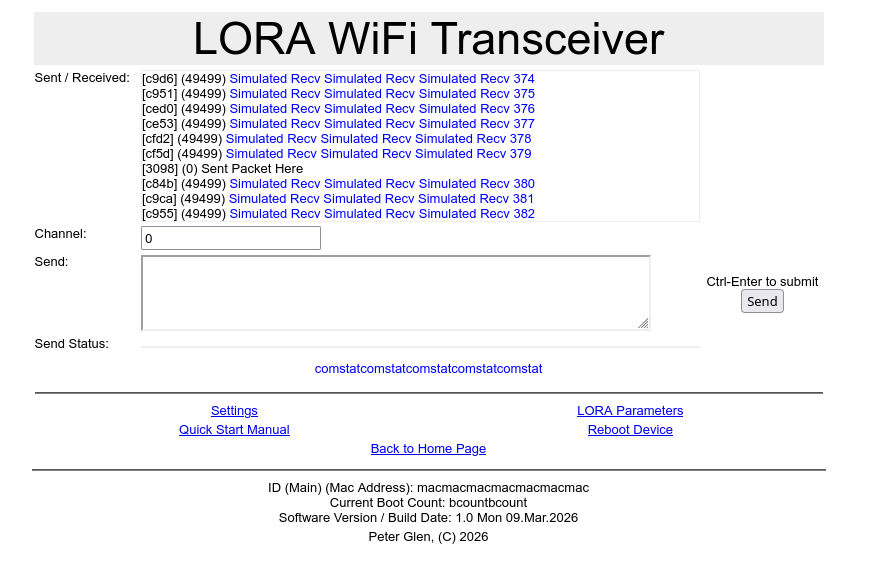

The project is developed with ESP-IDF 5.5. Can be downloaded from espressif's
web site.
Additionally:
m4 macro processor
make make utility
These are available with all platform / distros, and most likely are
already installed.
Open the project configuration menu ('idf.py menuconfig') or 'make menuconfig'
The LORA configuration is under / Component config / LoRa Configuration
The web configuratio is under
Execute the ./convpages.sh to generate the pages from the m4 macros.
Executer the ./genpages.sh to generate headers from html.
Build the project and flash it to the board, then run the monitor tool to
view the serial output:
Run idf.py -p PORT flash monitor to build, flash and monitor the project.
You can use the 'make' command to do
(To exit the serial monitor, type Ctrl-].)
See the Getting Started Guide for all the steps to configure and use the
ESP-IDF to build projects.

Commands: v (verbose) [1-10]; h (help); o (reboot);
w (pw) set power level. [2-15]
s (sf) set spread factor. [6-12]
b (bw) set bandwidth. [5-500]
f (fr) set frequency. [410.0-530.0] (Clamped to legal limits)
x (rx) RX offset frequency in +-Hz.
j (pj) ppm adjustment (+-0x7f)
d (de) set defaults. [fr=433.375 bw=50 sf=10 pw=12]
t (tr) transmit string
e (ep) repeat transmit string
r (re) set trench number
p (pr) print current and default configuration
m (du) dump persistent data.
c (cl) clear persistent data.
Use: 'command ?' for help on a particular command.
// EOF